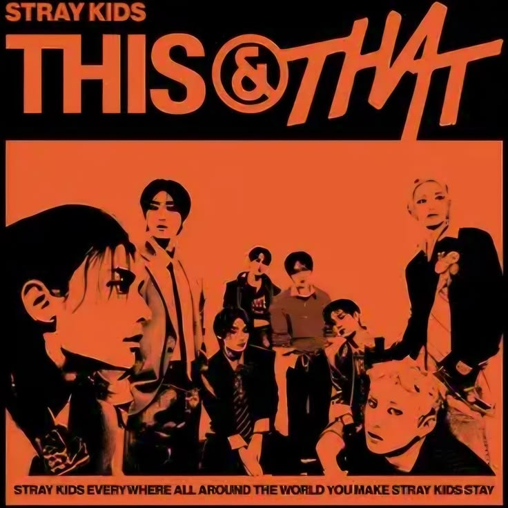

THE TRACK / LYRICRACHA
After You
Stray Kids
- ALBUM
- THIS & THAT
- RELEASE
- 2026.08.07
- UPDATED
- 2026.08.08
- LANGUAGE
- KOREAN
- LYRICS
- 3RACHA, Stefan Johnson, Jordan K Johnson, Jackson Foote, Oliver Peterhof
- COMPOSED
- 3RACHA, Stefan Johnson, Jordan K Johnson, Jackson Foote, Oliver Peterhof
02 / THE VOICES
Part Colors
03 / LYRIC DATABASE
Lyrics
アイ ハド トゥ キャッチ マイ ブレス ソー ユー ウォーキング パスト
I had to catch my breath, saw you walking past
息を整えなきゃならなかった 君が歩いていくのが見えたから
ディドゥント ノウ サムワン クッド ターン マイ ワールド アラウンド ライク ザット
Didn't know someone could turn my world around like that
たった一人の誰かが こんなふうに僕の世界を変えられるなんて知らなかった
ユー トゥック ア ピース オブ ミ イット オール ハプンド ソー ファスト
You took a piece of me, it all happened so fast
君は僕の一部をさらっていった すべてがあまりにも一瞬だった
もむちゅる す おぷっそ
멈출 수 없어
もう止められない
アンド アイ キャント サヴァイヴ
And I can't survive
そして僕は耐えられそうにない
イェー アイ スウェア アイ トライド
Yeah, I swear I tried
本当に頑張ったんだ 誓ってもいい
バット アイム アップ オール ナイト アンド アイ ドント ノウ ワット トゥ ドゥ
But I'm up all night, and I don't know what to do
一晩中眠れないまま どうすればいいのか分からない
ハウ キャン アイ ブリーズ ザ セイム アフター ユー
How can I breathe the same after you?
君に出会ったあとで どうして今までと同じように息ができるだろう
オー アイル スウィム スルー オーシャン アイズ トライナ ゲット トゥ ユー
Oh, I'll swim through ocean eyes tryna get to you
海のような瞳を泳いででも 君のもとへたどり着く
アイル ネヴァー ビー ザ セイム アフター ユー
I'll never be the same after you
君に出会ったあとの僕は もう二度と元には戻れない
アイル ネヴァー ビー ザ セイム アフター ユー
I'll never be the same after you
君に出会ったあとの僕は もう二度と元には戻れない
アフター ユー
After you
君に出会ってから
うぉね のえ こるめ ぱんひゃんい なわ かっきるる
원해 너의 걸음의 방향이 나와 같기를
君が歩いていく方向が 僕と同じであってほしい
そとぅん ね ちょんまでぃぬん もどぷし おせけ
서툰 내 첫마디는 멋없이 어색해
不器用な僕の最初の言葉は 格好悪くてぎこちない
おっとん って わど たるら いごん ラヴ アフェア
어떤 때 와도 달라 이건 love affair
どんな時とも違う これは恋なんだ
オー イェー フォー リアル いでろど
Oh, yeah, for real, 이대로도
本当に このままでも
わんびょかん かむじょんどぅり メタフォー
완벽한 감정들이 metaphor
完璧な感情のすべてが比喩になって
まんどぅろ かじゃご アネクドート
만들어 가자고 anecdote
一緒に物語を作っていこう
ちょむ と っとぅぃげ へじょ ナインティーン ってちょろむ
좀 더 뛰게 해줘 nineteen 때처럼
19歳の頃みたいに もっと胸を高鳴らせてくれ
まじゅちじ ぬんぐぁ ぬん さい
마주치지 눈과 눈 사이
視線と視線がぶつかり合う
まんふぁちょろむ スパーク てぃんだ
만화처럼 spark 튄다
漫画みたいに火花が飛び散る
ぷるがとぅん ぬんちえ っさうむ
불같은 눈치의 싸움
火のように熱い探り合い
とぅ ぱるまん とんどん くるぬんぐな イェー
두 발만 동동 구르는구나, yeah
ただ両足をばたつかせて焦っているんだ
アンド アイ キャント サヴァイヴ
And I can't survive
そして僕は耐えられそうにない
イェー アイ スウェア アイ トライド
Yeah, I swear I tried
本当に頑張ったんだ 誓ってもいい
バット アイム アップ オール ナイト アンド アイ ドント ノウ ワット トゥ ドゥ
But I'm up all night, and I don't know what to do
一晩中眠れないまま どうすればいいのか分からない
ハウ キャン アイ ブリーズ ザ セイム アフター ユー
How can I breathe the same after you?
君に出会ったあとで どうして今までと同じように息ができるだろう
オー アイル スウィム スルー オーシャン アイズ トライナ ゲット トゥ ユー
Oh, I'll swim through ocean eyes tryna get to you
海のような瞳を泳いででも 君のもとへたどり着く
アイル ネヴァー ビー ザ セイム アフター ユー
I'll never be the same after you
君に出会ったあとの僕は もう二度と元には戻れない
アフター ユー
After you
君に出会ってから
ビフォー ユー アイ ワズ ロスト インサイド ザ ダーク
Before you, I was lost inside the dark
君に出会う前の僕は 暗闇の中で迷っていた
ノーウェア トゥ ムーヴ
Nowhere to move
どこにも進めずに
めいる がとぅん シーン がとぅん いるさん そげ
매일 같은 scene 같은 일상 속에
毎日同じ場面を繰り返す 同じ日常の中で
アイ ハド ノー クルー
I had no clue
何も分かっていなかった
アフター ユー アイム アディクティッド トゥ
After you, I'm addicted to
君に出会ってから 僕は夢中になった
もりっそげ デジャヴ
머릿속의 déjà vu
頭の中で繰り返される既視感に
エヴリ ロード アイム ランニング スルー ユー チェンジド マイ ヴュー
Every road I'm running through, you changed my view
僕が駆け抜けるすべての道で 君が景色を変えた
ガット ミー チェイシング アフター ユー
Got me chasing after you
君を追いかけずにはいられない
ユー ユー ユー ユー ユー
You, you, you, you, you
君を 君を 君だけを
チェイシング アフター ユー
Chasing after you
君を追いかけて
ユー ユー ユー ユー ユー
You, you, you, you, you
君を 君を 君だけを
チェイシング アフター ユー
Chasing after you
君を追いかけて
ソー アイム アップ オール ナイト アンド アイ ドント ノウ ワット トゥ ドゥ
So I'm up all night, and I don't know what to do
だから一晩中眠れないまま どうすればいいのか分からない
ハウ キャン アイ ブリーズ ザ セイム アフター ユー
How can I breathe the same after you?
君に出会ったあとで どうして今までと同じように息ができるだろう
オー アイル スウィム スルー オーシャン アイズ トライナ ゲット トゥ ユー
Oh, I'll swim through ocean eyes tryna get to you
海のような瞳を泳いででも 君のもとへたどり着く
アイル ネヴァー ビー ザ セイム アフター ユー
I'll never be the same after you
君に出会ったあとの僕は もう二度と元には戻れない